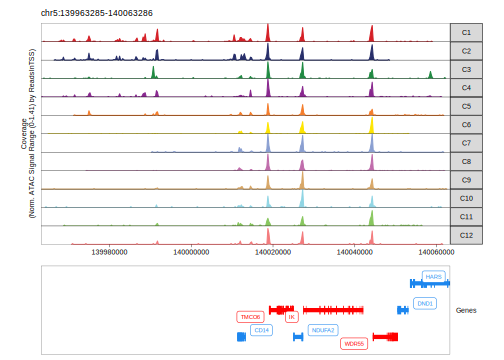

9.7 Track Plotting with ArchRBrowser
In addition to plotting gene scores per cell as a UMAP overlay, we can browse the local chromatin accessibility at these marker genes on a per cluster basis with genome browser tracks. To do this, we use the plotBrowserTrack() function which will create a list of plots, one for each of the genes specified by markerGenes. This function will plot a single track for each group in the groupBy parameter.
It is worth noting that the plotBrowserTrack() function plots “pseudobulk” level data from the single-cell ATAC-seq data by grouping many individual cells together. The cells selected are random and the number of cells selected and the cell groupings that can be displayed are based on the maxCells and minCells parameters respectively. As such, to ensure reproducibility of the functionality of the plotBrowserTrack() function, you should make sure to set a consistent seed for random number generation prior to plotting.
set.seed(1)
markerGenes <- c(
"CD34", #Early Progenitor
"GATA1", #Erythroid
"PAX5", "MS4A1", #B-Cell Trajectory
"CD14", #Monocytes
"CD3D", "CD8A", "TBX21", "IL7R" #TCells
)
p <- plotBrowserTrack(
ArchRProj = projHeme2,
groupBy = "Clusters",
geneSymbol = markerGenes,
upstream = 50000,
downstream = 50000
)
## ArchR logging to : ArchRLogs/ArchR-plotBrowserTrack-1a16462d18d-Date-2025-01-23_Time-20-19-16.837045.log
## If there is an issue, please report to github with logFile!
## 2025-01-23 20:19:17.501278 : Validating Region, 0.011 mins elapsed.
## GRanges object with 9 ranges and 2 metadata columns:
## seqnames ranges strand | gene_id symbol
## <Rle> <IRanges> <Rle> | <character> <character>
## [1] chr1 208059883-208084683 - | 947 CD34
## [2] chrX 48644982-48652717 + | 2623 GATA1
## [3] chr9 36838531-37034476 - | 5079 PAX5
## [4] chr11 60223282-60238225 + | 931 MS4A1
## [5] chr5 140011313-140013286 - | 929 CD14
## [6] chr11 118209789-118213459 - | 915 CD3D
## [7] chr2 87011728-87035519 - | 925 CD8A
## [8] chr17 45810610-45823485 + | 30009 TBX21
## [9] chr5 35856977-35879705 + | 3575 IL7R
## -------
## seqinfo: 24 sequences from hg19 genome
## 2025-01-23 20:19:17.584247 : Adding Bulk Tracks (1 of 9), 0.012 mins elapsed.
## 2025-01-23 20:19:18.921915 : Adding Gene Tracks (1 of 9), 0.035 mins elapsed.
## 2025-01-23 20:19:19.195664 : Plotting, 0.039 mins elapsed.
## 2025-01-23 20:19:21.503763 : Adding Bulk Tracks (2 of 9), 0.078 mins elapsed.
## 2025-01-23 20:19:19.067302 : Adding Gene Tracks (2 of 9), 0.037 mins elapsed.
## 2025-01-23 20:19:19.402905 : Plotting, 0.043 mins elapsed.
## 2025-01-23 20:19:20.157611 : Adding Bulk Tracks (3 of 9), 0.055 mins elapsed.
## 2025-01-23 20:19:21.392212 : Adding Gene Tracks (3 of 9), 0.076 mins elapsed.
## 2025-01-23 20:19:21.603658 : Plotting, 0.079 mins elapsed.
## 2025-01-23 20:19:22.483531 : Adding Bulk Tracks (4 of 9), 0.094 mins elapsed.
## 2025-01-23 20:19:23.732543 : Adding Gene Tracks (4 of 9), 0.115 mins elapsed.
## 2025-01-23 20:19:23.948389 : Plotting, 0.119 mins elapsed.
## 2025-01-23 20:19:24.627934 : Adding Bulk Tracks (5 of 9), 0.13 mins elapsed.
## 2025-01-23 20:19:25.889378 : Adding Gene Tracks (5 of 9), 0.151 mins elapsed.
## 2025-01-23 20:19:26.101466 : Plotting, 0.154 mins elapsed.
## 2025-01-23 20:19:26.947893 : Adding Bulk Tracks (6 of 9), 0.169 mins elapsed.
## 2025-01-23 20:19:28.157929 : Adding Gene Tracks (6 of 9), 0.189 mins elapsed.
## 2025-01-23 20:19:28.371197 : Plotting, 0.192 mins elapsed.
## 2025-01-23 20:19:29.11274 : Adding Bulk Tracks (7 of 9), 0.205 mins elapsed.
## 2025-01-23 20:19:30.466452 : Adding Gene Tracks (7 of 9), 0.227 mins elapsed.
## 2025-01-23 20:19:30.678786 : Plotting, 0.231 mins elapsed.
## 2025-01-23 20:19:31.453751 : Adding Bulk Tracks (8 of 9), 0.244 mins elapsed.
## 2025-01-23 20:19:32.735101 : Adding Gene Tracks (8 of 9), 0.265 mins elapsed.
## 2025-01-23 20:19:32.950608 : Plotting, 0.269 mins elapsed.
## 2025-01-23 20:19:33.843326 : Adding Bulk Tracks (9 of 9), 0.283 mins elapsed.
## 2025-01-23 20:19:35.041549 : Adding Gene Tracks (9 of 9), 0.303 mins elapsed.
## 2025-01-23 20:19:35.241047 : Plotting, 0.307 mins elapsed.
## ArchR logging successful to : ArchRLogs/ArchR-plotBrowserTrack-1a16462d18d-Date-2025-01-23_Time-20-19-16.837045.logHere, the output of plotBrowserTrack() is a list of plots. To plot a track of a specific gene, we can select one from the list.

We can save a multi-page PDF with a single page for each gene locus in our plot list using the plotPDF() function.
plotPDF(plotList = p,
name = "Plot-Tracks-Marker-Genes.pdf",
ArchRProj = projHeme2,
addDOC = FALSE, width = 5, height = 5)
## Plotting Gtable!
## NULL
## Plotting Gtable!
## NULL
## Plotting Gtable!
## NULL
## Plotting Gtable!
## NULL
## Plotting Gtable!
## NULL
## Plotting Gtable!
## NULL
## Plotting Gtable!
## NULL
## Plotting Gtable!
## NULL
## Plotting Gtable!
## NULLThe plotBrowserTrack() function is highly versatile and therefore has a lot of different parameter options so you should explore all of those capabilities in the function documentation. There are multiple different types of plot elements that can be plotted and these are controlled using the plotSummary parameter. Those options include:
bulkTrack- A pseudobulk representation of the ATAC-seq signal in the given regionscTrack- The per-cell integration signal scATAC-seq signal. Each row represents an individual cell. The number of cells plotted per cell grouping is controlled by thescCellsMaxparameterfeatureTrack- Regions to be shown as blocks below the tracks (i.e peak regions, or SNPs, or some other featuregeneTrack- Line diagrams of genes with introns and exons shown. We’ve adopted the convention of plotting “plus-stranded” genes (those that point left-to-right with the TSS on the left) in red and “minus-stranded” genes (those that point right-to-left with the TSS on the right) in blue.loopTrack- Arcs showing links between a peak and a gene, for example from co-accessibility or peak-to-gene linkage analysis. The actual loops plotted is controlled by theloopsparameter.
For example, instead of providing a set of genes to plot via geneSymbol, you could provide a set of regions to plot as a GRanges object to the region parameter.
You can also change which regions are shown as “features” by manipulating the features paramter. The default is to show the peakSet of your ArchRProject but you can provide a GRanges (for a single feature track) or a named GRangesList (for multiple feature tracks). If you provide a GRangesList, its best to provide a named list because the names will be used to label the individual feature tracks on the plot.
By default, the pseudobulk ATAC-seq tracks will be normalized based on ReadsInTSS (from cellColData) but this can be changed via the normMethod parameter if desired. Lastly, you can highlight specific regions in the plots using the hightlight and highlightFill paramters. There are tons of ways to use the plotBrowserTrack() function, far more than can be adequately reviewed in this manual so take the time to explore.